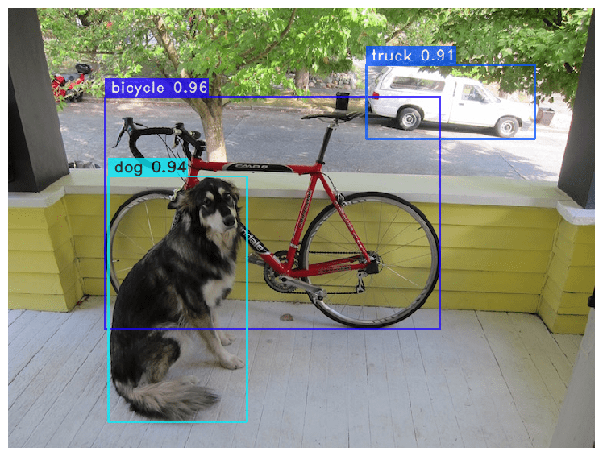

LOG_07: PROJECTS_AND_RESEARCH

MitoBERT Research
My current research focuses on the intersection of biology and artificial intelligence through the MitoBERT project at Northeastern. By adapting BERT-style transformer architectures to analyze mitochondrial DNA sequences, we are treating genetic data as a complex language. This approach allows us to identify mutations and patterns that traditional bioinformatics might miss. My role involves managing large-scale genomic datasets and fine-tuning attention mechanisms to better understand the "grammar" of life, showcasing how machine learning can revolutionize preventative healthcare and personalized medicine. Parallel to my work in genomics, I am developing autonomous drone systems that utilize YOLO (You Only Look Once) for real-time object detection and SLAM (Simultaneous Localization and Mapping) for environment reconstruction. This project is a testament to my interest in robotics, requiring a balance of low-latency computer vision and high-level spatial reasoning. By integrating these models, I am creating drones capable of navigating complex environments while identifying and tracking specific targets. These projects represent my commitment to being a cross-disciplinary developer. From the abstract weights of a neural network to the physical motors of a drone, I strive to master the full stack of modern technology.
CORE_STACK
- Python & PyTorch
- Google Cloud Certified PMLE
- Computer Vision & 3D Mapping
- Business Data Analytics